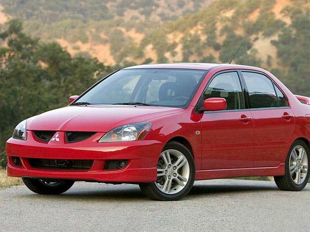

Mitsibishi Lancer 9
Весной 2000 года в Японии был представлен Mitsubishi Lancer (CS,CT) в кузове CS, получивший собственное имя Cedia (от слов Century Diamond — «бриллиант века»).
Lancer стал больше и предлагался с кузовами седан и универсал, а от японской версии Lancer Cedia отличался иным оформлением передней и задней части кузова автомобиля, более дешёвой отделкой салона, отсутствием полного привода и автоматической (CVT) трансмиссии.
Гамма моторов для Европы включала три бензиновые версии рабочим объёмом 1,3, 1,6 и 2,0 л. Для японского рынка Lancer оснащали более экономичными двигателями (GDI) объёмом 1,5 и 1,8 л. (100 л. с. и 130—137 л.с), в кузове универсал оснащался турбированным двигателем объёмом 1,8 л. (165 л. с.) и автоматической четырёх -ступенчатой трансмиссией.
Северной Америке предлагалась модификация с четырёхцилиндровым мотором объёмом 2,4 л. (164 л. с.).
